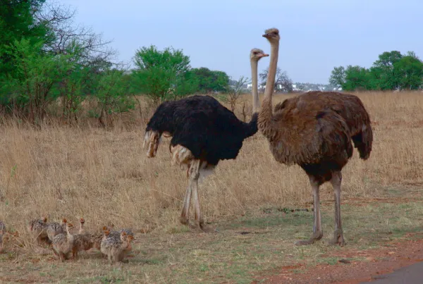

El elefante africano (Loxodonta africana) es considerado el mayor mamífero terrestre del mundo. Puede llegar a alcanzar los 5 metros de altura, los 7 metros de longitud y unos 6.000 kilogramos. Las hembras son algo menores, sin embargo, estos animal tienen un sistema social matriarcal y es una hembra "Alfa" la que mantiene unida a la manada. Pero al margen de su tamaño, es la peculiar figura del probóscido la que le diferencia de otras especies herbívoras. Una enorme cabeza y cuerpo sostenidos por cuatro patas que semejan pilares. Unas orejas muy desarrolladas, una larga trompa y unos grandes colmillos de marfil distinguen al elefante macho adulto. Los colmillos de las hembras son mucho más pequeños. La trompa les sirve a los elefantes para arrancar el pasto y las hojas y llevárselos a la boca. También les sirve para beber. Las enormes orejas les sirven para mediante su movimiento de abanico, refrigerar el cuerpo del paquidermo. Aunque conocemos sobradamente su inteligencia y capacidades emocionales que le convierten en un animal muy sensible, lo cierto es que un elefante salvaje es un animal muy peligroso, ya que si se siente amenazado puede reaccionar con movimientos muy bruscos y embestidas fatales para un humano. Actualmente el elefante se considera una especie vulnerable según la IUCN.
Entre los animales de África encontramos tres especies de zebras: la zebra común (Equus quagga), la zebra de Grévyi (Equus grevyi) y la zebra de montaña (Equus zebra). Según la IUCN, se encuentran en situación de preocupación menor, en peligro y en vulnerabilidad respectivamente. Estos animales, pertenecientes a la familia de los équidos, nunca han sido domesticados y solo están presentes en el continente africano. Son animales herbívoros, que se alimentan de hierba, hojas y brotes, aunque también de cortezas de los árboles o de ramas tiernas. Excepto las zebras de Grévyi, las otras especies son muy sociables, creando grupos conocidos como "harenes" donde conviven un macho, varias hembras y sus potrillos.
El avestruz (Struthio camelus) es el ave más grande del mundo, superando los 250 cm. de altura y los 150 kg. de peso. Se adapta perfectamente a las zonas áridas y semiáridas, por ello, podemos encontrarlo en África y Arabia. Se considera un animal omnívoro, pues se alimenta de plantas, artrópodos y carroña. Presenta dimorfismo sexual, siendo los machos de color negro y las hembras de color pardo o gris. Como curiosidad, destacamos que sus huevos son increíblemente grandes, pesando entre 1 y 2 kilogramos. Se encuentra en situación de preocupación menor según la IUCN.
